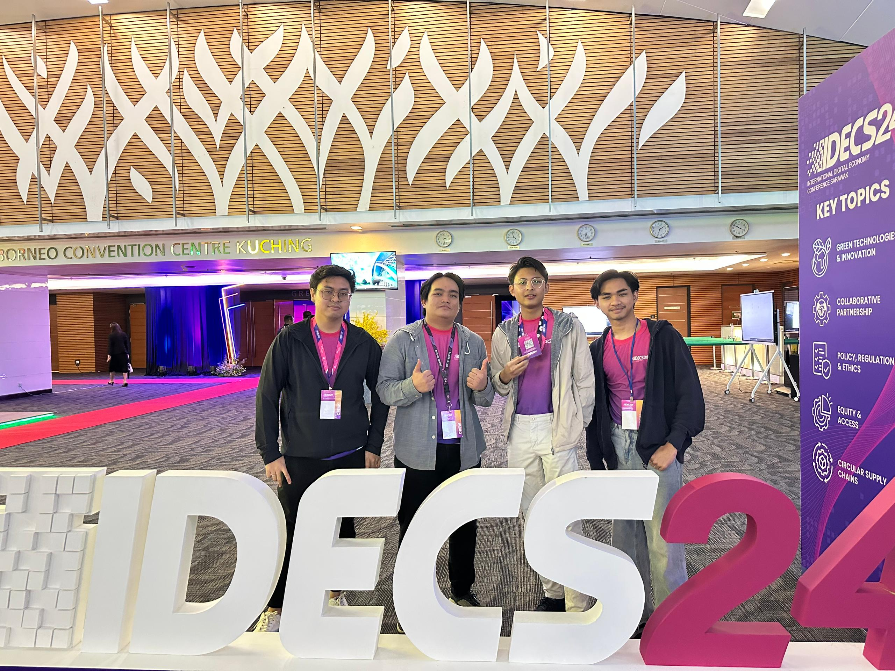
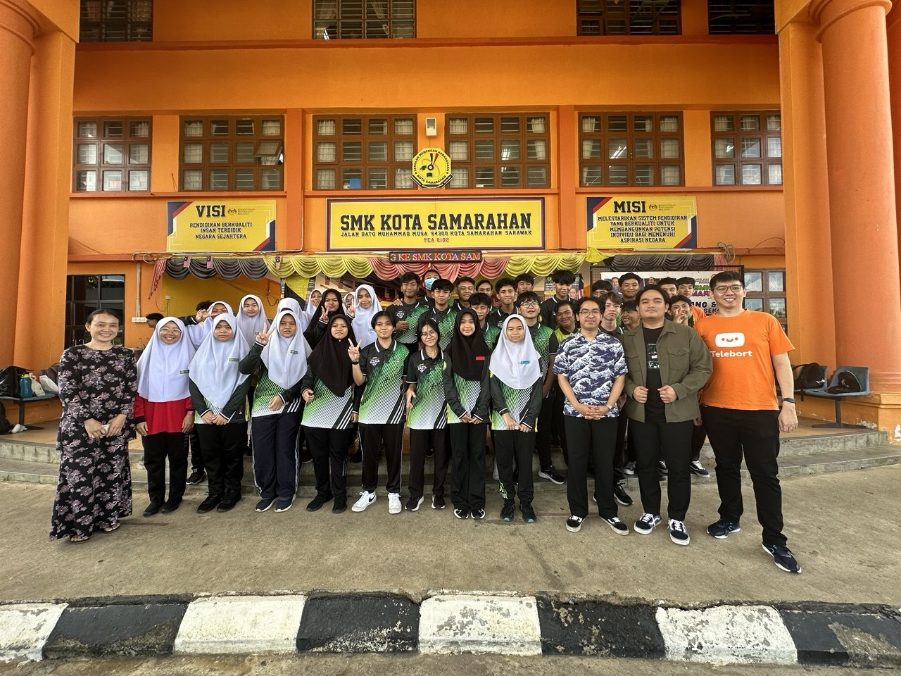
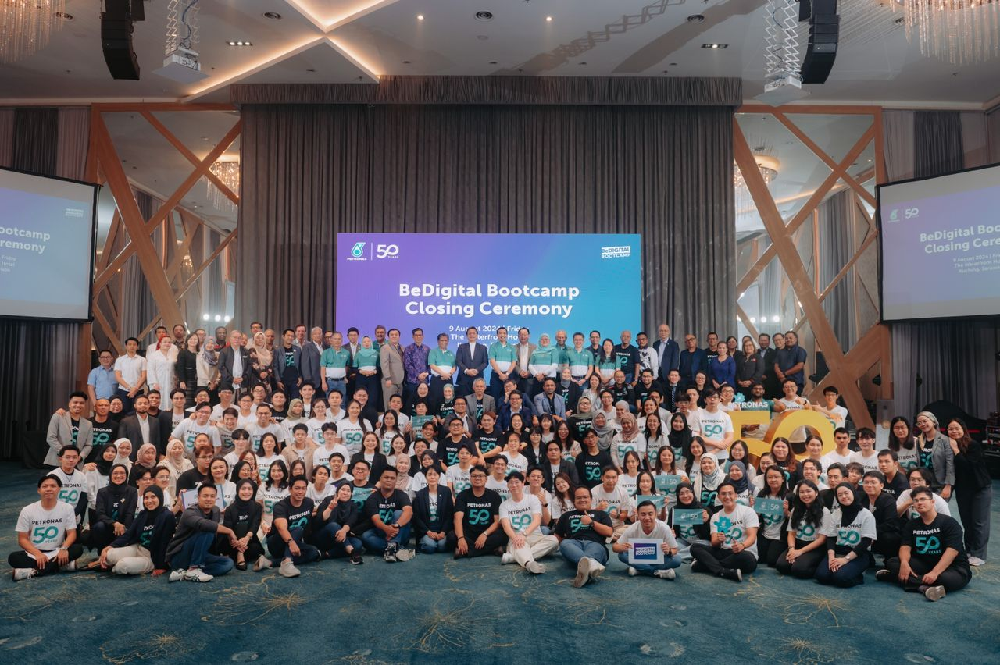
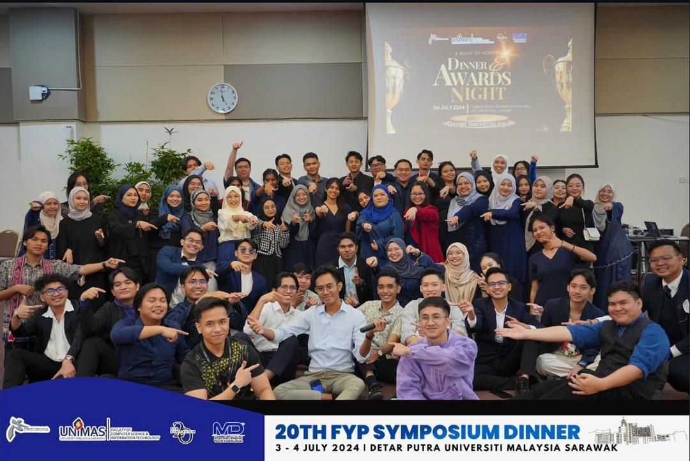
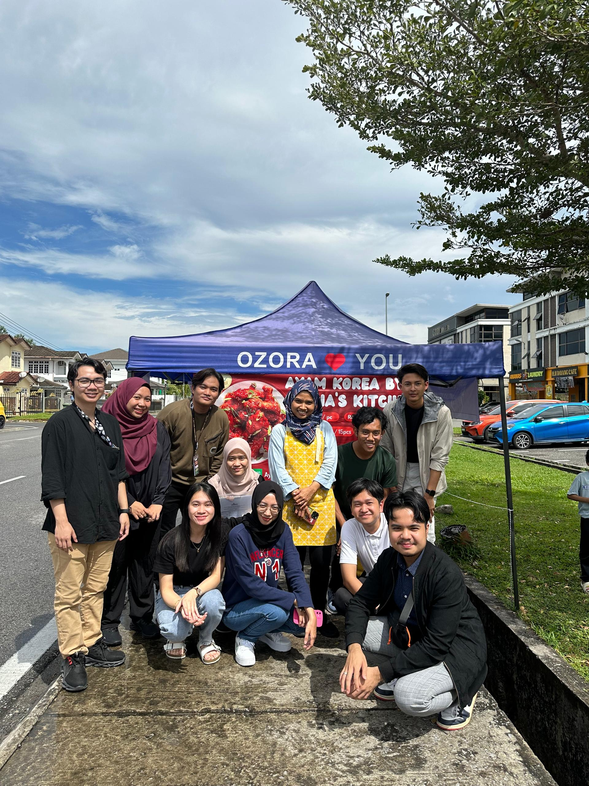
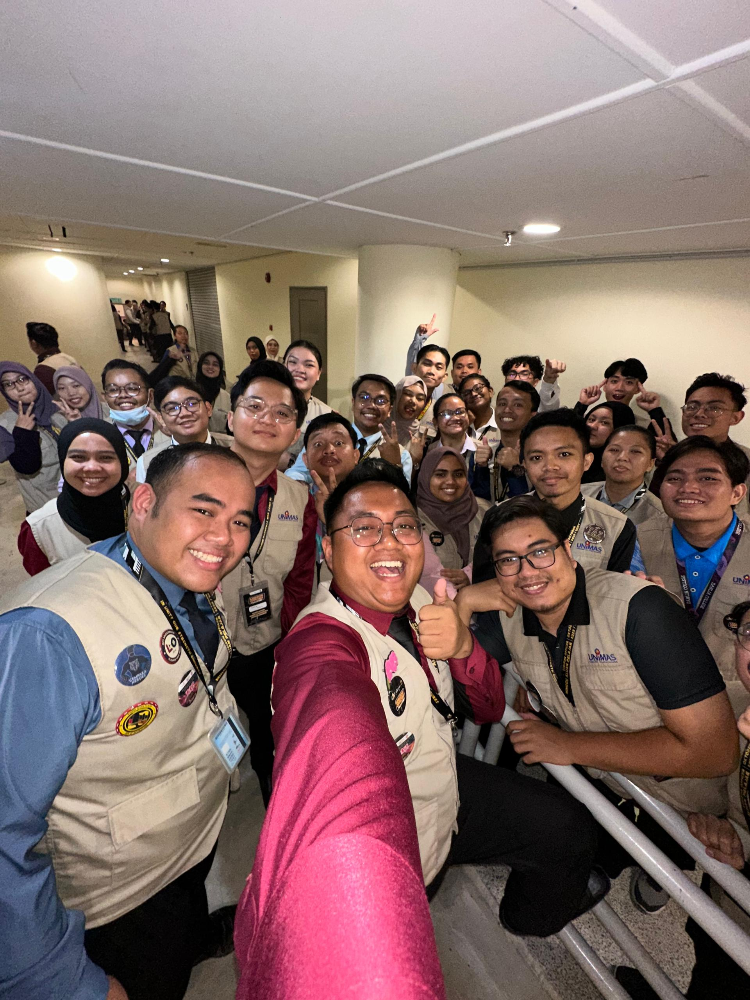
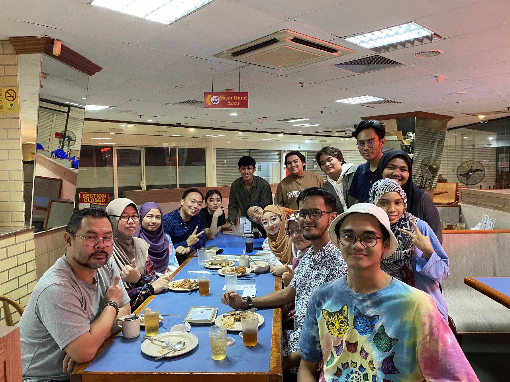
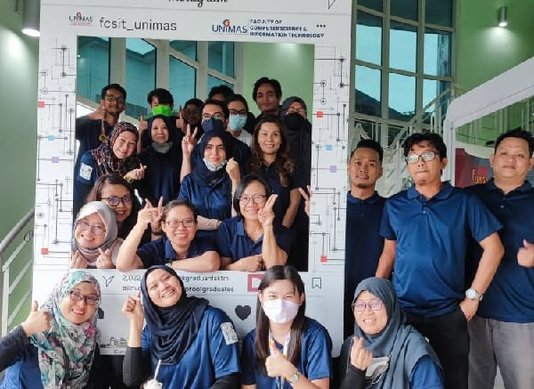
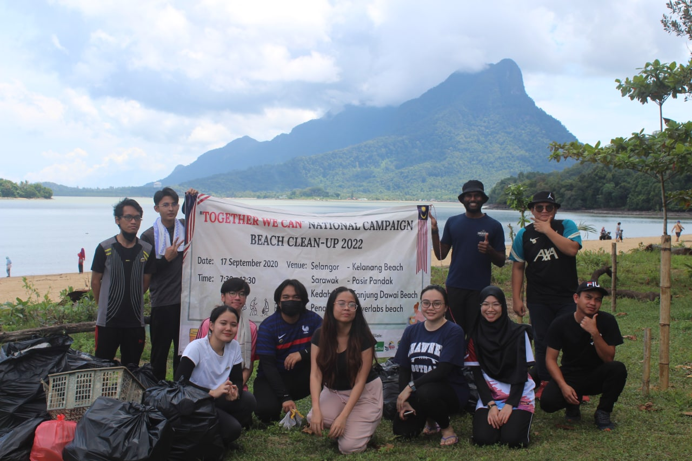

Activity
Leadership, volunteering and university activities
Volunteer - International Digital Economy Conference Sarawak (IDECS) 2024
Volunteered during the International Digital Economy Conference Sarawak (IDECS) 2024, one of Sarawak's flagship technology conferences focusing on Artificial Intelligence, digital economy, sustainability, and innovation. Assisted in conference operations, participant registration, coordination of programme activities, and logistics while interacting with government agencies, industry professionals, entrepreneurs, and technology leaders. The experience provided valuable exposure to emerging digital technologies, professional networking, and large-scale event management.
View Post Read Article

Volunteer – Talk & Tour University Mentors Group with Telebort
Volunteered as part of the Talk & Tour University Mentors programme in collaboration with Telebort. Contributed as a Data Science volunteer by conducting research, collecting survey responses, and analysing educational data related to Artificial Intelligence adoption in schools. Supported awareness initiatives while helping develop insights that could assist educational institutions in integrating AI into teaching and learning environments.
Read Article

PETRONAS BeDigital Bootcamp Cohort #8
Successfully completed the PETRONAS BeDigital Bootcamp Cohort #8, an intensive two-week professional development programme designed to prepare future digital talents. Participated in hands-on workshops covering Artificial Intelligence (AI), Cybersecurity, Human Resource Management, Leadership, Design Thinking, and emerging digital technologies. Worked closely with industry experts on real-world case studies, enhanced problem-solving and collaboration skills, and gained valuable exposure to digital transformation strategies adopted by leading organizations.
View Post Read Article

Head of Discipline & Protocol Unit – FCSIT Final Year Project Symposium
Appointed as the Head of the Discipline and Protocol Unit for the FCSIT Final Year Project Symposium 2024, where I led the secretariat team in coordinating event protocols and ensuring smooth programme execution. I managed VIP reception and protocol arrangements, supervised committee members, coordinated event flow with multiple departments, and prepared official reports and documentation. This role strengthened my leadership, communication, event management, and problem-solving skills while ensuring a professional experience for guests, lecturers, industry representatives, and participants.
View Activity

Project Leader – Service Learning Malaysia (SULAM)
Served as the Project Leader for the Service Learning Malaysia–University for Society (SULAM) programme in collaboration with Adelia's Kitchen through the "Ayam Korea" community project. Led a multidisciplinary team in planning and producing a promotional video to increase business visibility while assigning responsibilities, monitoring project progress, and ensuring timely completion of deliverables. Managed project documentation, portfolios, and presentations while fostering teamwork, creativity, and effective stakeholder communication throughout the project.
Watch Video

Assistant Head of Logistics & Technical (LOGITEK) – MAP UNIMAS
Served as the Assistant Head of the Logistics and Technical Unit during Minggu Aluan Pelajar (MAP) UNIMAS and the MAP Appreciation Ceremony. Responsible for supervising logistics operations, coordinating venue preparation, managing technical equipment, mentoring Liaison Officers (LO), and ensuring smooth execution of orientation programmes for incoming students. Collaborated closely with organizing committees to resolve operational issues efficiently and deliver successful university-wide events.
Watch Video

EXCO of Activities & Volunteerism – PERTEKMA FCSIT
Served as the Executive Committee (EXCO) for Activities and Volunteerism under PERTEKMA, Faculty of Computer Science and Information Technology (FCSIT), UNIMAS. Organized, coordinated, and facilitated numerous faculty programmes, workshops, and volunteer initiatives in both physical and hybrid formats. Contributed as a facilitator, protocol officer, committee member, and volunteer while promoting student engagement, leadership development, teamwork, and community service across various university activities.

Volunteer – FCSIT Research Open Day
Assisted in organizing the FCSIT Research Open Day by coordinating a campus-wide scavenger hunt and facilitating interactive 3D printing demonstrations for visiting secondary school students. Helped promote STEM education through engaging activities while developing communication, teamwork, and public engagement skills.
Read Article

Volunteer – MYBIOSA "Together We Can" National Campaign
Participated in the MYBIOSA "Together We Can" National Campaign by joining environmental conservation initiatives, including beach cleanup programmes and recycling campaigns. Collaborated with volunteers from diverse backgrounds to promote sustainability, environmental awareness, and responsible waste management while contributing to community engagement activities.